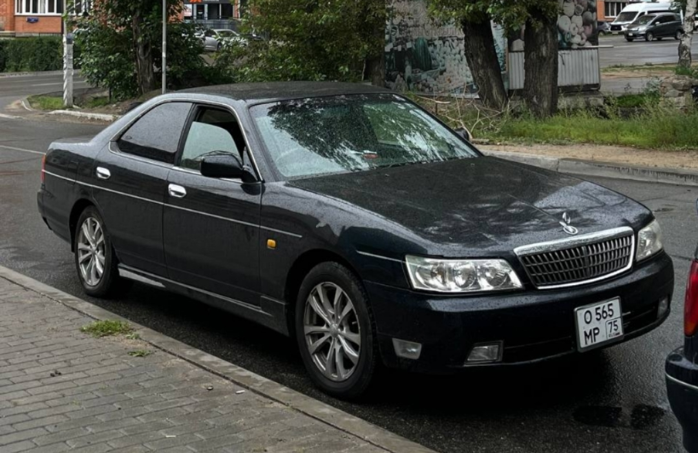
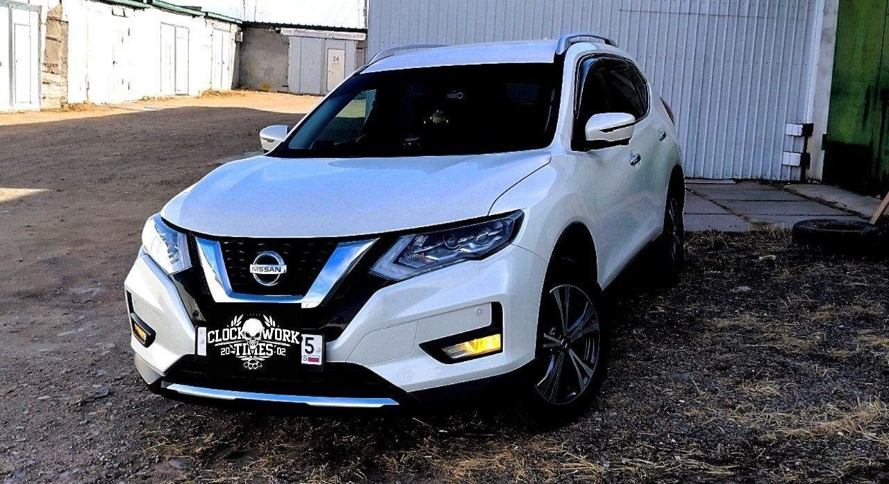
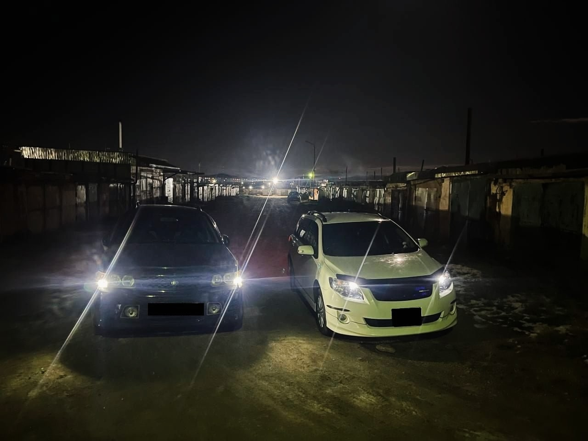
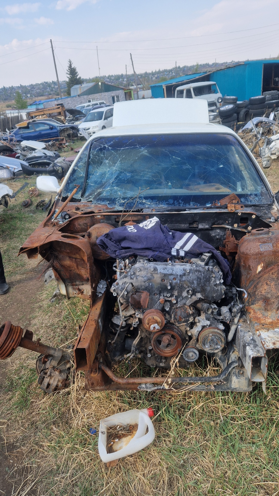

Nissan Laurel C35 (Крокодейл)
Перечислять можно очень долго что было сделано. В основном перебрали электрику, довели двигатель до идеала. Заменили торпеду в салоне. Починили ходовую. Заменили топливную систему. Довели машину до идеала технически. В планах только аксессуарные работы (перекраска, моддинги, замена фар, замена обвесов).

Nissan X-trail (Беляш)
В этой машине были заменены стойки, шаровые, в общем ходовая часть. Заменили АКПП. Были аксессуарные доработки.

Nissan R-Nessa (слева)
В этой машине было очень много сделано. Замена абсолютно всей ходовки, замена двигателя и АКПП. Аксессуарные работы. Полностью доведена до идеала.
Toyota Fielder (справа)
Эта машина надежная, за все время в ней ремонтировалась только ходовая часть (немного), замена двери багажника, замена топливной системы.

ВЫ ДУМАЛИ Я ШУЧУ ПРО УНИЧТОЖЕНИЕ? >:)
Ладно, она просто сгорела ((